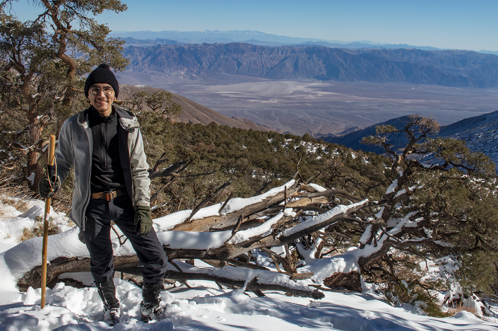
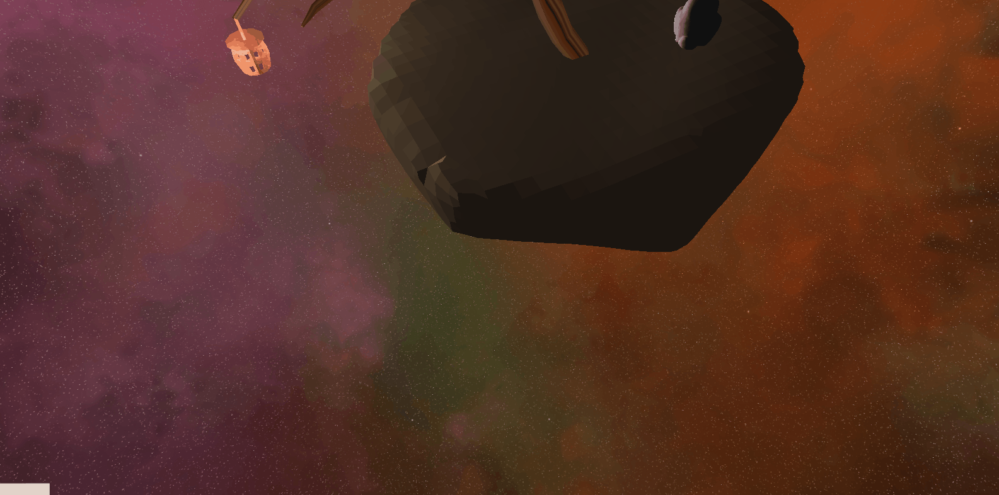
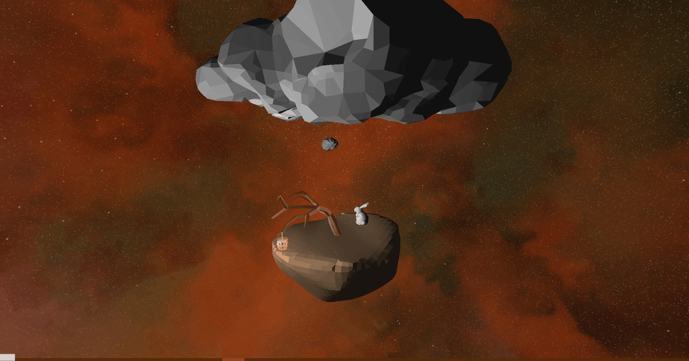
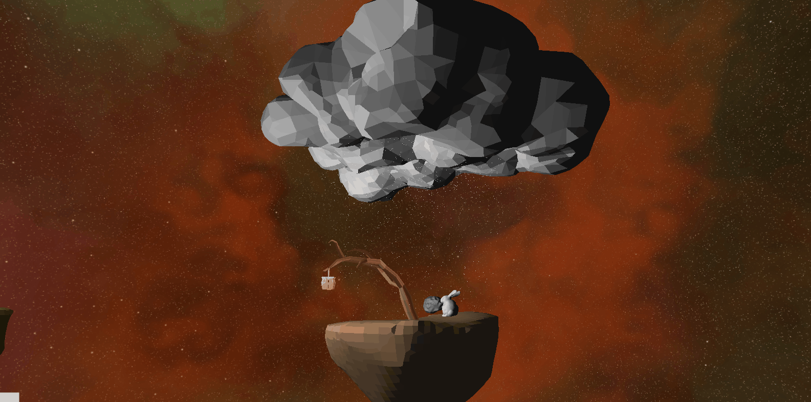
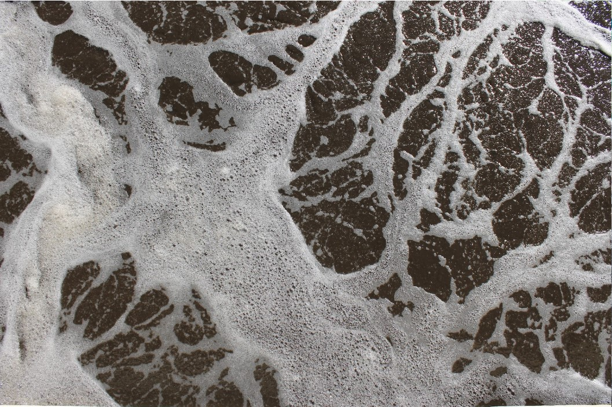
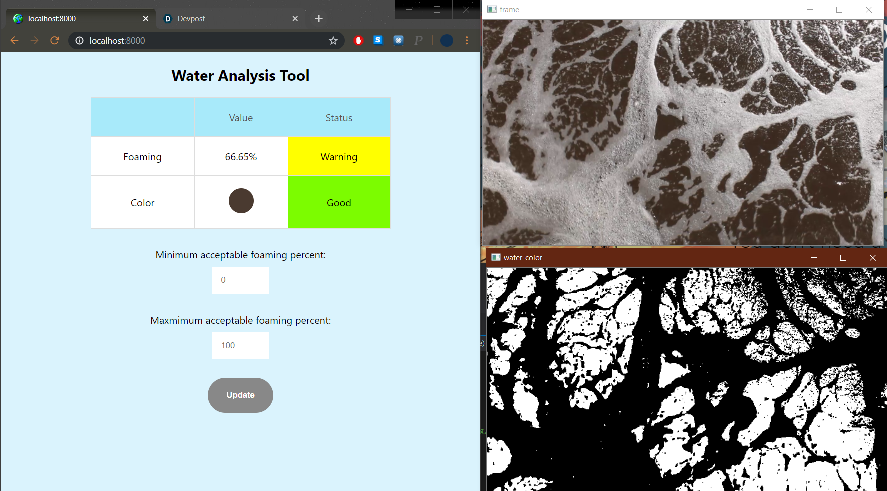
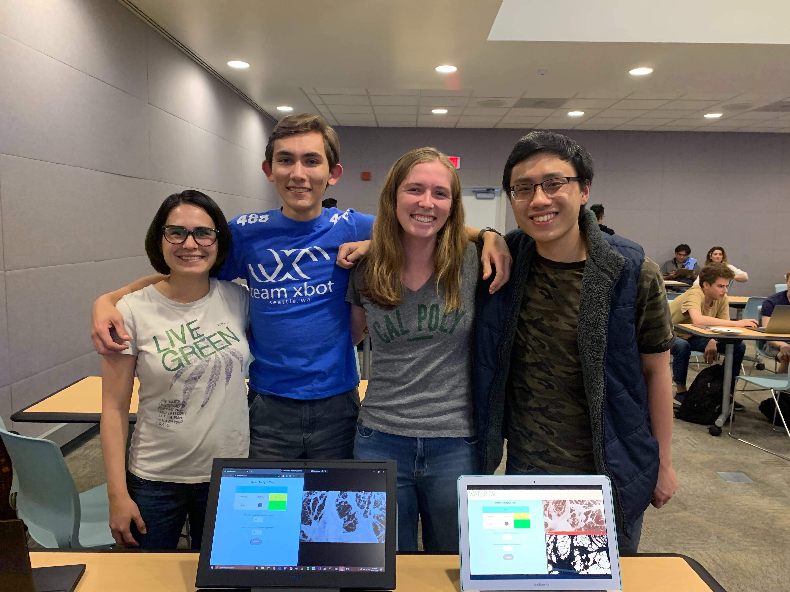

Gabriel Young's Portfolio
Hi, I'm Gabriel, a Computer Science student from Cal Poly SLO (San Luis Obispo).
Some of my professional interests are Computer Vision, Robotics and Automation, Computer Graphics, and Data analytics.
My personal interests include hiking, backpacking, History, and Cooking.
Death Valley near Wildrose Peak Dec 2021
Projects:
Orbiting Islands
A computer graphics project with original blender models and a simple physics simulation
Orbiting Islands
This Project was made for CSC 471 at Cal Poly in fall quarter 2021.
For my final project, I created two floating islands, and asteroid in blender, and put them together in a kinematics model to orbit each other. My initial idea was to model something like the three-body problem, with three bodies of roughly equal mass exerting orbital forces on each other. Due to time constraints, it proved impractical to find an initial stable configuration to model. Therefore, I decided to model a more traditional orbital system with one body having a dominant amount of mass. In this project that body is the largest island.
For this project I made sure to implement technically challenging features but making a visually appealing and cohesive scene was very important to me, hence the decision to create most of the models.

I implemented:
- Collision detection
- Orbital Kinematics model
- Animated particle system
- Blinn-Phong lighting
- Texture mapping
Collision detection
Collisions are implemented as perfectly elastic, using vector math. A collision occurs when the distance between two bodies is less than or equal to the sum of their radii. When a collision occurs, the vector normal of collision is computed. Then the dot product of the difference in velocities and the vector normal of collision is computed to get the relative velocity of the bodies along the vector normal of collision. This relative velocity is subtracted and added to the velocities of the bodies, and then mass weighting is applied.
After the collision, the asteroid follows a curved path because of gravitational force
Orbital Kinematics model
Each body has a radius, mass, position, velocity, and acceleration. These, along with the gravitational constant, are initially set manually to create a stable system. When the model runs, the acceleration is computed according to Cowell’s method (for Orbit Modeling) and velocity and position are set accordingly. This was implemented such that all the bodies exert gravitational force on each other. In practice however, the motions of the bodies are mostly determined by the largest island as it had the largest mass by far.
Cowell's method
Animated particle system
The snow falling from the cloud onto the large island is what constitutes the particle system. Particles are spawned randomly within a disk in the cloud itself and accelerate downward for a given time. The particle positions are also updated according to the position of the large island itself.
The particles may be a bit hard to see, but if you enlarge the image, you should be able to see the particles accelerating
Blinn-Phong lighting
I implemented Blinn-Phong lighting for this project with ambient, diffuse, and specular components. There is a light source attached to the large island and a second light source attached to the smaller island.
Light reflected on the cloud by the light source from the little island
Texture mapping
I also implemented texture mapping on the trees, lantern, and tank. As a note, the tank turret is animated to rotate side to side and the lantern’s animated to become brighter and dimmer.

Can you spot the tank? It's very well camouflaged
References
Collisions: vector-based collisions
Orbits: Cowell's method
Blender Stuff: Low Poly Tree
Low Poly Island
WaterCV
A winning hackathon project to improve the wastewater treatment process
WaterCV
This project was made for the 'SLO hacks go' hackathon in November 2019.
During this project, I worked with three other team members to create a program to help quantitatively analyze wastewater during the wastewater treatment process. Specifically, the goal of this program was to measure the “mixed liquor quality” with computer vison.
“Mixed liquor quality” refers to how much solid biomass still mixed in with the wastewater in an aeration tank. The wastewater plant we were dealing with used the “active sludge” method for filtering wastewater, which consists of an aeration tank, at which point air is injected into the wastewater, and a settling tank, where the water “settles” and the biomass physically separates from the wastewater, with only clear, treated water remaining.
Going to the treatment plant
At the start of the project, we drove over the SLO wastewater treatment plant to learn more about the wastewater treatment process from the workers at the plant, and to collect data in the form of videos of the water in the aeration tank.

An aeration tank at the SLO wastewater treatment plant.
Writing the Computer Vision Program
The computer vision program first converted the input video into the HSV color space, to improve image segmentation and make the system more robust against varying light levels. The program then used a simple threshold to segment the bubbles from the water and calculated the percent of the frame that was covered by water. Then, the average color of the water was computed. I attempted to implement a way to calculate the size of the individual bubbles by matching the bubbles with textures through key points, but was not able to due to time constraints.
An example frame of what the computer vision program would run on.
Final Product
We displayed our project as a combination of raw video of the wastewater, a visualization of the program’s segmentation, and a website to display the computed data.
Final product visualization
Team Members
I worked on this project with Jasmine D, Linnea Holmen, and John Yee.
I worked with OpenCV in C++ to process video and get relevant quantitative information from video footage of wastewater in a tank where it is treated. Jasmine D was the industry expert that helped identify the problem and provided access to the information we used in our demo. Linnea Holmen worked on the ideation process, the final presentation, and finding ways to simply explain the complicated process of wastewater treatment. John Yee created the web page which read the data and displayed it in an easy-to-read table.
Team members, Nov 2019